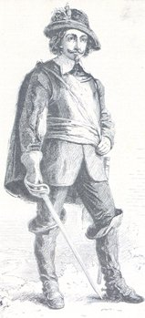
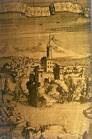

| Fur trading post |
| On his voyages Cartier sees clearly
that there are furs in Canada, nothing more. But by the time of
Champlain the fur trade has become very
lucrative. The King of France allows businessmen,
grouped in a private company, to hold a monopoly on this trade
in return for a share of the profits. The company must
also see to bringing in settlers and missionaries to
evangelize the Indigenous peoples. Champlain works for
De Monts, a Huguenot merchant. After the failure
of a colony in Acadia, De Monts asks Champlain
to go into the interior of the continent and set up a trading
post there. This takes a great deal of capital, steadier
exploitation of natural resources, a permanent settlement and
year-round staff.
In 1608 De Monts has the Abitation built at his own expense, and he remains the owner of Quebec until 1613. He is the true founder of Quebec. Champlain still hopes to find the route to the Indies and thinks that from the top of Cap-aux-Diamants he can control trade with Asia. |
|

So Champlain settles in Quebec with twenty-seven men, masons, carpenters and tradesmen employed by the company. They are called the hivernants (winterers). Champlain takes care to stockpile food as well as building the abitation: a small wooden fort with an enclosure protected by cannons. An imposing structure for the time and place, it has three main buildings: one for the craftsmen, one for Champlain, and storehouses for supplies and trade goods. The French successfully sow wheat the very first summer. The fishing is miraculous, and waterfowl and caribou abound. |
| Surviving the winter
Geological research in the 20th century has shown that northern America went through a little ice age lasting 300 years, from 1500 to 1820. This is thought to have meant harsh winters and more rain in summer. |
| The climate is harsh in
New France; Champlain's first winter in Quebec is
merciless: twenty people out of twenty-eight die, thirteen of
scurvy and seven of dysentery. Champlain is helpless; he does not know
the remedy for scurvy that Cartier had received from the
Indigenous people. Is this settlement doomed to fail like
all the others in New France so far (Tadoussac,
Acadia...)?
Surviving the winter becomes the only priority. Without that, no permanent settlement is possible. The French realize they must watch and imitate the Indigenous people. So they dig pits to keep corn, fruit and vegetables. They wrap themselves in fur coats and fur caps, walk on snowshoes, and go hunting and fishing. This new way of life helps them a great deal to adapt and to beat the winter. The winters of 1610 and 1611 claim no victims, and Champlain understands that it is a poor diet that kills, not the cold.
Quebec nonetheless remains nothing more than a trading post where the Indigenous people come to exchange furs for goods. No one really wants to settle there. |
| The first settler |
| It is only with the arrival of Louis
Hébert and his family that Quebec becomes a true
colony. Champlain had known Louis Hébert since they were
in Acadia together. He persuades him to come and settle in Quebec
in 1617. Louis Hébert is hired by the Company, to which he must
sell his surplus crops. Being an apothecary, he must
also treat the other engagés free of charge. He may not
trade in furs, since the company wants no competition.
Champlain counts on his example to encourage other settlers
to come.
In 1618 Champlain presents " the inventory of Canada's natural resources " to the French chamber of commerce. Richelieu, minister to King Louis XIII, wants a Catholic company. He pushes for the founding of the Compagnie des Cent Associés (Company of One Hundred Associates) in 1627. This powerful company takes charge of Canada. Yet that same year no ship reaches the colony, which depends entirely on France for its survival, since there are not enough settlers to grow food. |
| Why so few settlers? |
| The company sees no advantage in it:
the Indigenous people bring enough furs to the trading
post. As for the missionaries, they prefer a few good
Catholic settlers who set an example for the people they want
to convert, rather than many settlers, some of whom might be
bad characters. The population of the Habitation will never
exceed 100 people.
17th-century France is the most populous country in Europe, and people there believe that the more populous a country is, the more powerful it is, since it is easier to raise an army. France does not want to lose population; that would remain its great fear until the 18th century. While in the English colonies the population is already 5,000, then 10,000 (the town of Boston is founded in one go by the arrival of 2,000 people), Quebec's population grows drop by drop. In the race for colonies France cannot win, because it excludes the Protestants, against whom it is waging an internal war, and because for France Canada is merely a fur-trading venture that needs few people. It does not aim to build a strong colonial core, whereas the English in New England and the Dutch in New York succeed in doing so. |
| The English attack |
| War breaks out between France and
England in 1627, and the King of England, Charles I, takes the opportunity
to enrich himself by seizing the fur trade.
He commissions the Kirke brothers to take the trading posts of
New France. Their first attempt, in 1628,
fails, but they come back in 1629. They take
Tadoussac, an outport of Quebec (finding the navigation
up to Quebec too risky, ships stopped there and people
continued their journey by small boat). The English burn the
crops, capture Jesuits and massacre people of the
Gaspé. Then, better navigators than the French, they
appear before Quebec. Champlain cannot believe his
eyes: he himself had never dared sail up the St. Lawrence beyond
Tadoussac. On July 19, 1629, he has to resign himself to surrendering
to the English.
 The Kirke brothers' task is not hard, since the winters of 1628 and 1629 had greatly weakened the population. The ships meant to supply the people had been intercepted by the English, and famine was rife. Some had taken refuge with the Algonquins so as not to starve; others were reduced to eating roots. So they did not have the strength to resist the Kirke brothers.
Louis Hébert's family and a few interpreters decide to stay in the country. On July 24, 1629, watching their compatriots leave Quebec, they think it is the end of Champlain's great dream. During the crossing, on meeting another ship, Champlain learns that France is victorious and that the war was already over when England seized Quebec. But it is too late... almost the entire population is on board with him. Three years later the North American colony is returned to France by the Treaty of Saint-Germain-en-Laye. |
| The real beginnings of Quebec |
|
Champlain takes Quebec back The Compagnie des Cent Associés then begins its work of colonization. Entrepreneurs such as Robert Giffard and the Juchereau brothers gradually recruit settlers. By 1635 New France has four hundred inhabitants. A little infrastructure appears: missionaries found the Jesuit College, and various religious communities settle, including the Ursulines and the Hospitallers, who devote themselves to education and care of the sick. Throughout these first faltering steps of Quebec, Mathieu Choret, born around 1620 in France, is a young child. He comes on the scene in the mid-1640s. Quebec is then only just beginning to develop, but it will never stop again. |


 Champlain
travels the country, draws maps, goes farther up the St. Lawrence
than Cartier and reaches the Great Lakes. He does
everything he can to convince the Company of the country's riches and
the need to invest in settlers.
Champlain
travels the country, draws maps, goes farther up the St. Lawrence
than Cartier and reaches the Great Lakes. He does
everything he can to convince the Company of the country's riches and
the need to invest in settlers.